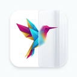

在浏览器侧边栏一键打开 ChatGPT / Claude / Gemini 等真实网页端
这是本扩展最关键的行为，请先了解：
所以：如果切到某个标签后看不到侧边栏，不是坏了——那个标签还没打开过侧边栏，在该标签点一下扩展图标/悬浮图标即可。
把扩展图标固定到工具栏，以后点一下就能打开侧边栏：
固定后，扩展图标常驻工具栏，随时可点。
侧边栏按标签页独立显示：在哪个标签打开就只在那个标签出现，切到别的标签自动收起，不会互相干扰。
🔒 所有数据仅保存在本地浏览器，不会上传任何服务器。